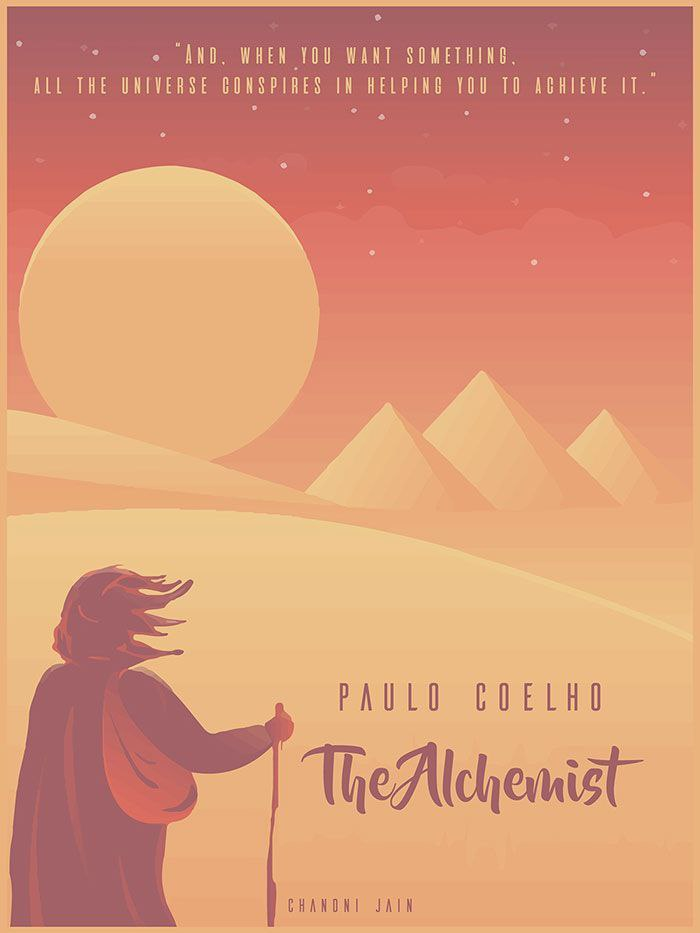

My Favorites

Home Alone
One of my all-time comfort movies. A timeless comedy full of clever humor, holiday vibes, and warm energy. I never get tired of rewatching it.

The Alchemist
A beautifully written story about following your dreams and trusting your journey. I enjoyed its simple wisdom and inspiring message.
Taxi Driver (K-Drama)
My absolute favorite drama — intense, emotional, and meaningful. I’m so excited for Season 3!